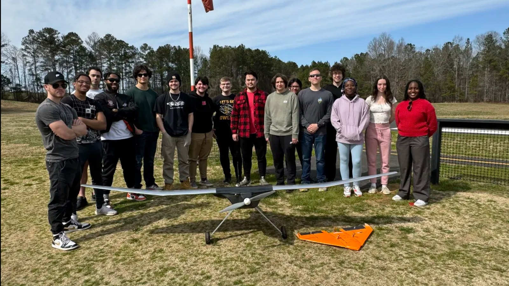
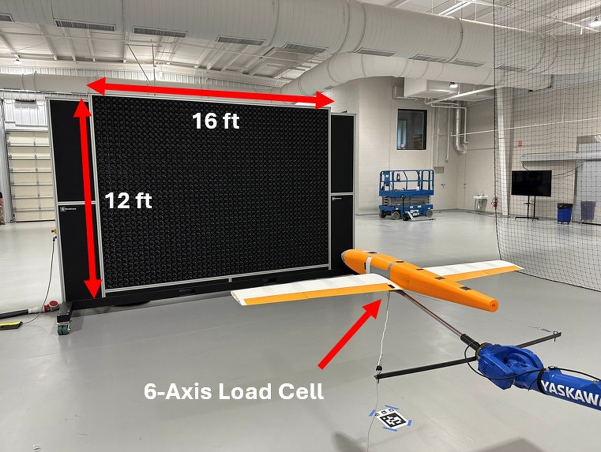
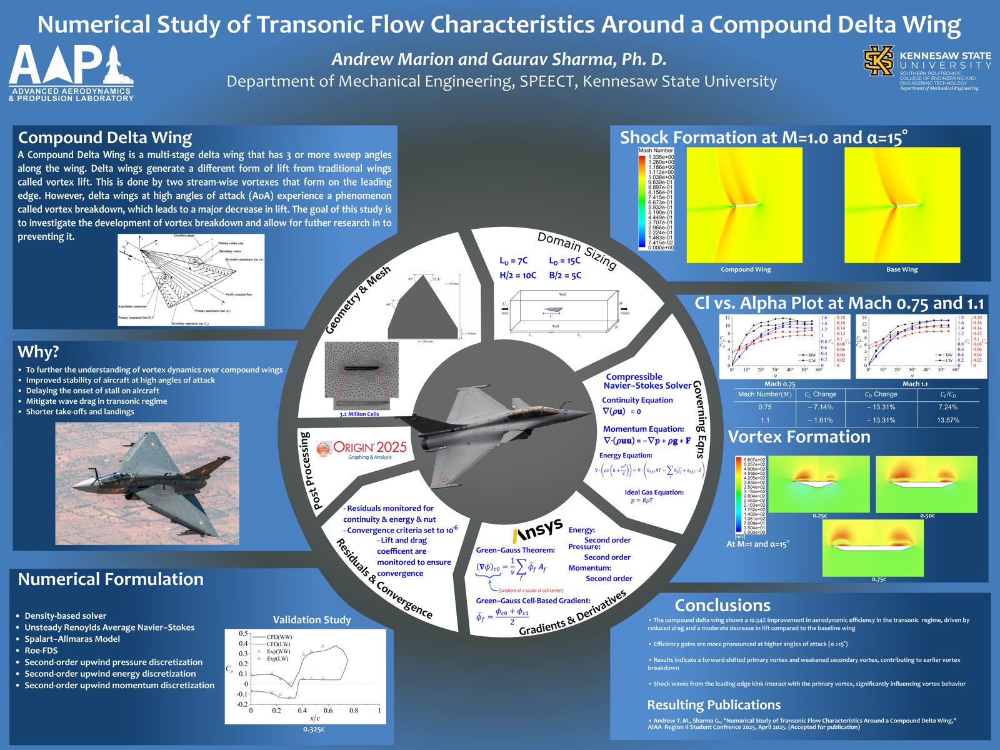
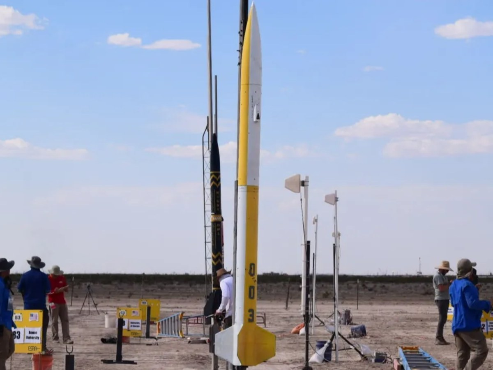
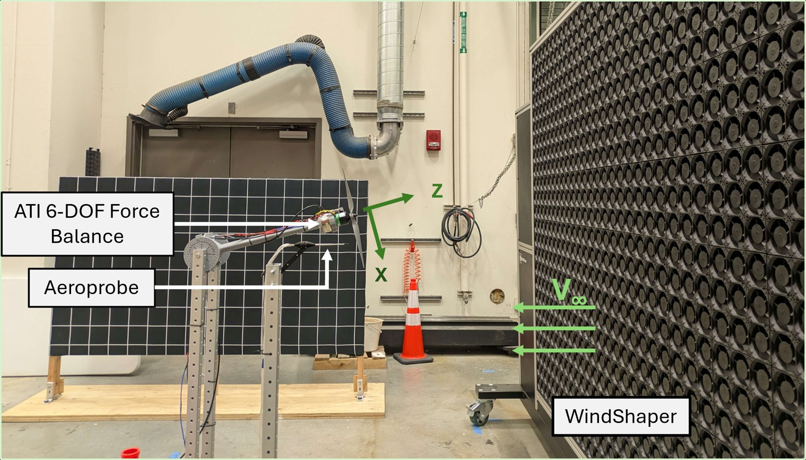
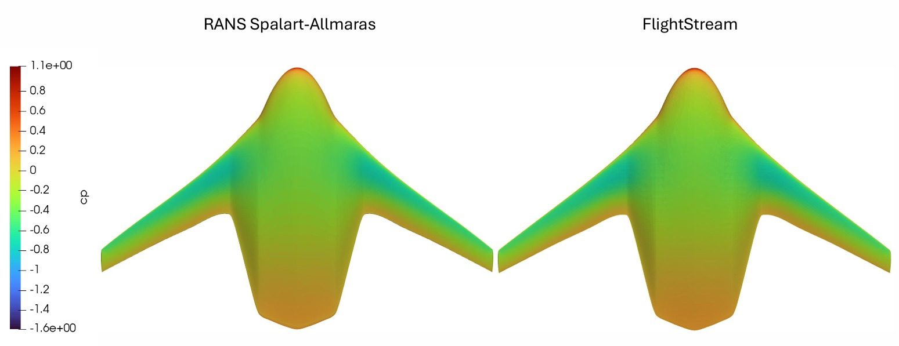

Featured Work
 Fig. 01+ Add Photo
Fig. 01+ Add Photo
NASA Glenn Research Center — UAV Flight Control Intern
Implementing MATLAB/Simulink flight control algorithms in PX4 for a 12 ft distributed electric propulsion UAV with 16 electric fans, and developing control reallocation algorithms tested across 8,000 fan-failure cases with Monte Carlo simulation.
See the internship →
Fig. 02+ Add PhotoAutonomous Delivery Aircraft
Led development of an autonomous delivery aircraft, programming an ArduPilot-based autopilot capable of launching from a larger custom carbon-fiber carrier aircraft and landing itself at a designated target, as Team Lead for SAE AERO Design.
See the build →
Fig. 03+ Add PhotoControl Surface Validation — "Bird" UAV
Validated FlightStream aileron-deflection load predictions against high-fidelity CFD and wind-tunnel/load-cell testing on a Group-1 fixed-wing UAV, co-authored at AIAA SciTech 2026.
Read more →
Fig. 04+ Add PhotoCompound Delta Wing CFD
140+ CFD simulations in ANSYS Fluent characterizing delta wing performance, improving lift-to-drag efficiency from 7.24% to 13.57% in the transonic regime. First-authored papers at the 2025 AIAA Region II Student Conference and AIAA SciTech 2027.
Read more → Fig. 05+ Add Photo
Fig. 05+ Add Photo
Textron GSE Internship
Designed and drew up a hinged door and access doors for Textron GSE's electrified baggage tractor and belt loader, applying GD&T, tolerance stack-up, and sheet metal design.
See the build →
Fig. 06+ Add PhotoIntercollegiate Rocket Engineering Competition Rocket
Led team operations and contributed CFD-driven drag optimization for the rocket body and camera mount, plus hands-on fiberglass construction and 3D-printed payload components, for the team's IREC competition rocket.
See the build →
Fig. 07+ Add PhotoTilt-Wing Propeller Modeling
Modeling an APC 16×10E propeller for tilt-wing VTOL UAVs in FlightStream and validating it against blade element theory and six-component WindShape force-balance data from 0° to 180° tilt.
Read more →
Fig. 08+ Add PhotoBlended Wing Body vs. RANS CFD
Benchmarking Siemens FlightStream against RANS-based CFD for blended wing body aircraft in collaboration with Siemens — one first-author and one co-authored paper accepted to AIAA SciTech 2027.
Read more →